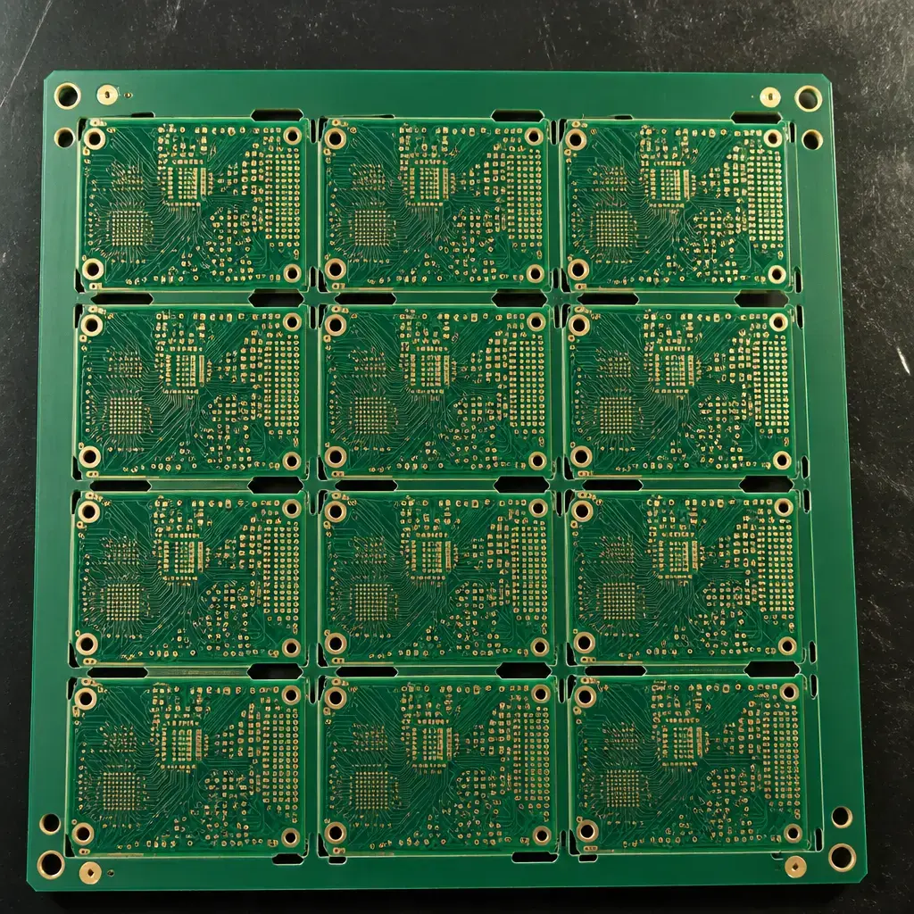

DFM (Design for Manufacturability) is the practice of designing PCBs that are not merely possible to manufacture, but optimized for manufacturing cost, yield, and reliability at production volume. While DRC (Design Rule Check) answers the binary question "can this board be built?", DFM answers the economic question: "what will this board cost to build at 10,000 units — and can we reduce that by 15-30% without changing the schematic?"
At Huaxing PCBA, our DFM review process catches an average of 18-35 manufacturability issues per new design — issues that DRC alone would never flag. These range from suboptimal panel utilization (costing $0.08-0.25/board in wasted material) to unnecessary layer counts (a 6-layer design that could work as a 4-layer, saving $0.60-1.20/board). Over a 50K-unit production run, these savings compound to $30,000-$60,000. DFM is not optional — it is the highest-ROI engineering activity in PCB development.
DFM vs. DRC: What Most Engineers Get Wrong
The most common misconception in PCB design is that passing DRC means a board is ready for production. DRC checks geometric rules: minimum trace width, minimum spacing, minimum annular ring. These are binary constraints — the board either passes or it doesn't. DFM, by contrast, evaluates economic and yield trade-offs that DRC has no concept of:
- DRC says: "This 75µm trace passes minimum width." DFM says: "At 75µm, etching yield drops from 99.7% to 97.2% — widen to 100µm if space permits, saving $0.12/board in scrap."
- DRC says: "This via pad meets minimum annular ring." DFM says: "At minimum annular ring, drill wander will cause 1.8% breakout on outer layers. Increase pad by 50µm to eliminate this failure mode."
- DRC says: "Board meets all clearance rules." DFM says: "Panel utilization is 72%. Rotate boards 90 degrees and reduce rail width to achieve 87% — saving 1.6 m² of laminate per 1,000 panels."
| Aspect | DRC (Design Rule Check) | DFM (Design for Manufacturability) |
|---|---|---|
| Question Answered | Can it be built? | What will it cost — and can we reduce that? |
| Scope | Geometric rules only | Geometry + materials + process + supply chain + test |
| Output | Pass / Fail (binary) | Cost delta, yield impact, optimization recommendations |
| Panel Awareness | None — treats board in isolation | ✓ Optimizes per-panel economics |
| Volume Sensitivity | None — same rules at any quantity | ✓ Different strategy for 100 vs. 100K units |
| Component Awareness | Footprint-to-footprint clearance only | ✓ Availability, cost-tier, alternate sources, placement efficiency |
| Test Strategy | Not addressed | ✓ Test point placement, ICT compatibility, flying-probe vs. bed-of-nails |
| Tool | CAD DRC engine (Altium, KiCad, Allegro) | Engineer + fabricator collaboration + CAM analysis |
Common DFM Issues: The Hidden Cost Drivers
Every PCB design contains DFM opportunities — issues that are technically within spec but economically suboptimal. The table below catalogs the most frequent DFM findings our engineering team identifies during review, along with the yield and cost impact of each.
| DFM Issue | What It Looks Like | Yield Impact | Cost Impact (per 10K units) | Fix |
|---|---|---|---|---|
| Suboptimal Panel Utilization | Boards nested at <80% panel fill, excessive rail width, inefficient orientation | N/A — pure material waste | $800-$2,500 in wasted laminate | Rotate/nest boards, reduce rail to 12mm, add breakaway tabs |
| Unnecessary Layer Count | 6-layer design where 4-layer would meet impedance and routing requirements | Slight improvement (fewer layers = fewer defects) | $6,000-$12,000 saved by removing one layer pair | Re-evaluate stackup; route critical nets on outer layers first |
| Trace/Space at Fab Limit | 75µm/75µm traces where 100µm/100µm would fit | Etching defects: 0.5-2.8% depending on copper weight | $200-$900 in scrap + rework | Widen traces to 100µm wherever routing permits |
| Acid Traps | Acute-angle copper junctions (<90 degrees) that trap etchant | 0.1-0.5% opens/shorts at trap locations | $150-$600 in field failures | Route all trace junctions at ≥90 degrees; add teardrops |
| Copper Slivers | Thin isolated copper fragments from incomplete polygon pour | 0.3-1.2% — slivers detach and cause shorts | $300-$1,200 in rework/scrap | Set polygon minimum area rule; remove dead copper |
| Insufficient Annular Ring | Pad-to-hole annular ring below 125µm on mechanical drills | 1.0-3.5% breakout on outer layers from drill wander | $500-$2,000 in scrap | Increase pad diameter by 100µm over finished hole size |
| Solder Mask Slivers | Solder mask dam <100µm between pads — peels during reflow | 0.5-1.5% solder bridging on fine-pitch components | $250-$800 in rework | Widen mask dam to 125µm minimum; consider mask-defined pads |
| Copper-to-Edge Clearance | Copper within 300µm of board edge — exposed after routing | 0.2-0.8% edge shorts after depaneling | $100-$500 in scrapped boards | Maintain ≥400µm copper-to-edge clearance; add route keep-out |
| Thermal Relief Defects | Missing or insufficient thermal relief on planes — tombstoning risk | 0.5-2.0% cold joints on SMD passives connected to planes | $300-$1,500 in rework | Use 4-spoke thermal relief, 250µm spoke width minimum |
| Via-in-Pad Without Fill | Unfilled vias in SMD pads — solder wicking during reflow | 2.0-5.0% open joints (highly dependent on via size) | $600-$3,000 in scrap + rework | Copper-fill and planarize all via-in-pad; or relocate vias |

DFM Optimization Levers: Where the Money Is
Not all DFM optimizations are equal. The table below ranks the highest-impact levers by dollar savings per board at mid-to-high volume. These numbers are based on actual Huaxing PCBA production data across 500+ customer designs — they are not theoretical estimates.
| DFM Lever | Savings Per Board | At 10K Units | At 100K Units | Effort to Implement |
|---|---|---|---|---|
| Panel Utilization (+1%) | ~$0.03 | $300 | $3,000 | Low — re-route panel, adjust rail width |
| Panel Utilization (+10%) | ~$0.30 | $3,000 | $30,000 | Medium — may require board outline changes |
| Layer Count Reduction (6L to 4L) | $0.60-$1.20 | $6,000-$12,000 | $60,000-$120,000 | Medium-High — requires re-route, stackup redesign |
| Layer Count Reduction (8L to 6L) | $0.80-$1.50 | $8,000-$15,000 | $80,000-$150,000 | High — significant re-route, may need HDI |
| Component Size: 0402 vs. 0201 | $0.02-$0.05 | $200-$500 | $2,000-$5,000 | Low — update footprints, check assembly capability |
| Component Size: 0603 vs. 0402 | $0.01-$0.03 | $100-$300 | $1,000-$3,000 | Very Low — footprint swap in CAD |
| Single-Sided Assembly (vs. Double) | $0.40-$0.90 | $4,000-$9,000 | $40,000-$90,000 | High — requires complete placement reorganization |
| Surface Finish: HASL vs. ENIG | $0.50-$1.50 | $5,000-$15,000 | $50,000-$150,000 | Low — spec change, verify flatness requirements |
| Surface Finish: OSP vs. ENIG | $1.00-$2.50 | $10,000-$25,000 | $100,000-$250,000 | Low — spec change only; OSP shelf life is shorter |
| Test Strategy: Flying Probe vs. ICT | Flying probe: $0.15-$0.40 setup ICT: $3,000-$8,000 fixture + $0.02-$0.08/board | Break-even ~3K-8K units | ICT saves $0.10-$0.35/board after break-even | Low for flying probe; High for ICT fixture design |
Note on panel utilization: Going from 72% to 85% panel utilization is a 13-point gain — worth approximately $0.39/board. On a 50K-unit order at $8/board bare PCB cost, that single optimization saves $19,500. Panel utilization is almost always the first and highest-ROI DFM lever to pull.
DFM Design Rules Every PCB Designer Should Know
These are not DRC minimums — they are DFM best-practice targets that keep your design in the high-yield, low-cost zone. For each rule, the minimum is what your fabricator can technically produce; the recommended value is where yield is optimized and cost is minimized.
| Design Parameter | Fabrication Minimum | DFM Recommended | Why the Margin Matters |
|---|---|---|---|
| Outer Layer Trace/Space | 75µm / 75µm (3mil/3mil) | 100µm / 100µm (4mil/4mil) | At 75µm, etching yield is ~97%; at 100µm, yield rises to 99.5%+. The 25µm margin eliminates most etching-related opens and shorts. |
| Inner Layer Trace/Space | 75µm / 75µm | 100µm / 100µm | Inner layers have no plating variability but still benefit from wider traces for impedance control and lower resistance. |
| Mechanical Drill Diameter | 0.20mm (8mil) | 0.30mm (12mil) | Drills below 0.25mm have 3x higher breakage rate and 2x the cost. Stay at 0.30mm+ unless density forces smaller. |
| Annular Ring (Outer Layer) | 75µm (3mil) | 150µm (6mil) | Drill wander of ±50µm is normal. 75µm annular ring leaves only 25µm margin — unacceptable for volume production. 150µm provides robust margin. |
| Solder Mask Dam Width | 75µm (3mil) | 125µm (5mil) | Mask dams below 100µm risk peeling during reflow, especially on 0.5mm pitch and finer. Green mask adheres better than other colors at thin dams. |
| Copper-to-Board-Edge | 200µm (8mil) | 400µm (16mil) | Router bit wander during depaneling is typically ±100µm. 200µm clearance leaves near-zero margin. 400µm ensures no exposed copper after routing. |
| Via-to-Trace Clearance | 150µm (6mil) | 200µm (8mil) | Via pad registration tolerance stacks with trace etching tolerance. 200µm provides a robust guard band for both. |
| Silkscreen Line Width | 100µm (4mil) | 150µm (6mil) | Below 150µm, silkscreen legibility degrades significantly. For reference designators near fine-pitch parts, 150µm is the practical minimum for readability. |
DFM Strategy by Production Stage
DFM is not one-size-fits-all. The optimization strategy that makes sense for a 100-unit prototype run is completely wrong for a 500K-unit consumer product. The decision framework below breaks down the DFM priorities at each production stage.
Speed over cost. Prove the design first.
At 10-500 units, engineering time is more expensive than bare board cost. Don't spend 40 engineer-hours chasing $0.50/board savings on a 100-unit run — that's $50 total. Use standard stackups, generous design rules, and off-the-shelf components. Focus DFM on functional correctness: will this board work? Are critical nets impedance-controlled? Are BGA escapes verified? A 24h-turn DFM sanity check is sufficient. Save the panel optimization for volume.
Balance. Optimize what matters most.
At 1,000-50,000 units, DFM savings become material. A $0.50/board optimization is worth $500-$25,000. Prioritize: (1) panel utilization above 82%, (2) layer count — is every layer pair paying for itself?, (3) component size standardization to avoid niche parts with long lead times, (4) single vs. double-sided assembly decision. At this volume, the NRE for a bed-of-nails ICT fixture ($3,000-$8,000) breaks even around 3K-8K units — evaluate it. A full DFM report with cost modeling is warranted.
Every cent counts. No design decision is too small to question.
At 50,000+ units, a $0.01/board saving is worth $500 — enough to pay for the engineering time to find it. Every design element is on the table: panel utilization above 88% (custom panel tooling if needed), layer count at absolute minimum, every component footprint reviewed for assembly yield, solder mask defined vs. non-solder mask defined pads optimized per package, surface finish chosen for cost not convenience, test coverage above 95% with ICT + flying probe hybrid strategy. At this volume, run a costed BOM with DFM annotations — every line item reviewed for cost, availability, and alternate sourcing. The DFM review here is not a report — it's a collaborative optimization process with your CM's engineering team, often 2-4 weeks of iterative refinement.
Huaxing DFM Review Process
Every PCB design submitted to Huaxing PCBA receives a free DFM review before production begins. Our process is systematic, documented, and designed to identify cost-saving opportunities that generic DRC tools miss. Here is exactly what we check and how we deliver results.
| Huaxing DFM Review — What We Check | |
|---|---|
| Panel Utilization Analysis | We calculate exact panel utilization (board area / panel area), identify rotation and nesting improvements, and provide a utilization-vs-cost curve showing the dollar impact of each percentage point gained or lost. Target: >85% for volume production. |
| Layer Count Optimization | We evaluate whether your layer count is appropriate for your routing density, impedance requirements, and BGA complexity. If we can achieve your design intent with fewer layers, we provide a specific stackup proposal and estimated savings. Includes signal integrity review for any proposed changes. |
| Trace/Space & Copper Geometry | Full CAM-level review of every copper layer: minimum trace/space vs. our production capability, acid traps, copper slivers, starved thermals, insufficient annular ring, and copper-to-edge clearance. We flag every instance with Gerber coordinates. |
| Solder Mask & Paste | Solder mask dam width verification, mask-defined vs. non-mask-defined pad analysis, paste mask aperture optimization for each package type, solder mask clearance around vias. We model paste release for fine-pitch and BGA components. |
| Component Selection Review | BOM line-by-line review for: availability (real-time distributor stock check), EOL risk (NRND/obsolete parts flagged), cost-tier alternatives (suggest drop-in replacements at lower cost), and assembly compatibility (package vs. our placement capability). |
| Test Strategy | Test point coverage analysis, ICT vs. flying probe recommendation based on volume and board complexity, test point placement review for accessibility, and boundary-scan (JTAG) coverage assessment if applicable. |
| Impedance & Signal Integrity | Impedance stackup verification against your requirements (controlled impedance ±10%), differential pair geometry review, reference plane continuity check across splits. We provide a measured impedance coupon plan for every controlled-impedance design. |
| Report Delivery | Complete DFM report in PDF + annotated Gerber overlay within 24 hours. Priority: P0 (will cause functional failure), P1 (will cause yield loss >1%), P2 (cost optimization opportunity), P3 (advisory / future improvement). Every finding includes the dollar impact estimate at your stated volume. |
Real DFM Cost-Saving Examples
The following are anonymized examples from actual Huaxing PCBA customer designs where our DFM review identified significant savings. These are not theoretical — they are documented cases from our production records.
Example 1: Panel Utilization Rescue — IoT Sensor Module
A customer submitted a 35x22mm IoT sensor board for a 50K-unit production run. Their panel layout achieved 68% utilization (8 boards per 300x250mm panel, 15mm rails). Our DFM review proposed rotating boards 90 degrees and reducing rails to 10mm: 12 boards per panel, 89% utilization. Bare board cost dropped from $0.82 to $0.63/board — a $9,500 saving across 50K units. The customer's only change was accepting a new panel drawing. Zero redesign required.
Example 2: Layer Count Reduction — Industrial Controller
A 6-layer industrial control board (180x120mm, 0.8mm BGA pitch, controlled impedance on DDR3 interface) was submitted with a 6-layer stackup: Top/GND/Sig1/Pwr/Sig2/Bottom. Our DFM analysis identified that Sig1 and Sig2 routing density was only 38% — the board could route on 4 layers (Top/GND/Pwr/Bottom) with careful impedance tuning on Top and Bottom layers. The customer re-routed in 3 days. Savings: $1.05/board on bare PCB, $52,500 on the 50K-unit order. Signal integrity simulations confirmed no degradation — the DDR3 interface actually performed better with the shorter via transitions in the 4-layer design.
Example 3: Component Optimization — Wearable Device
A wearable device BOM specified 0201 passives throughout for space savings. Our DFM review noted that the board had sufficient clearance for 0402 on 70% of passive positions. Switching those positions to 0402 reduced component cost from $0.008 to $0.003/passive, improved assembly yield (0402 placement defect rate is 3x lower than 0201), and eliminated a secondary inspection step. Total savings: $0.14/board in component + assembly cost, $14,000 on 100K units, with higher first-pass yield. The 0201 parts were retained only where spacing absolutely required them.
Example 4: Surface Finish Selection — Automotive Telematics
An automotive telematics module specified ENIG on all exposed pads — including test points, mounting pads, and connector pads that did not require gold wire bonding. Our DFM review recommended OSP (Organic Solderability Preservative) for all non-critical pads with ENIG retained only on the BGA and fine-pitch connector pads (selective ENIG + OSP). The mixed finish saved $1.30/board, $39,000 on 30K units. Shelf life concerns were addressed by vacuum-sealed packaging with desiccant and a 12-month solderability warranty.
Industries Where DFM Delivers Maximum ROI
DFM applies to every PCB, in every industry. But the optimization strategy — and the magnitude of savings — varies by sector. Here is how DFM priorities shift across the industries we serve.
Further Reading
- PCB DFM Tips: 15 Design Rules That Save Money at Scale — practical guide with before/after examples, Gerber screenshots, and a downloadable DFM checklist for your CAD tool
- PCB Stackup Design Guide — how layer stackup decisions affect cost, signal integrity, and DFM optimization opportunities
- PCB Laminate & Material Selection — choosing materials that balance cost, performance, and manufacturability
- HDI PCB Technology Guide — when HDI is the right DFM choice for density-constrained designs